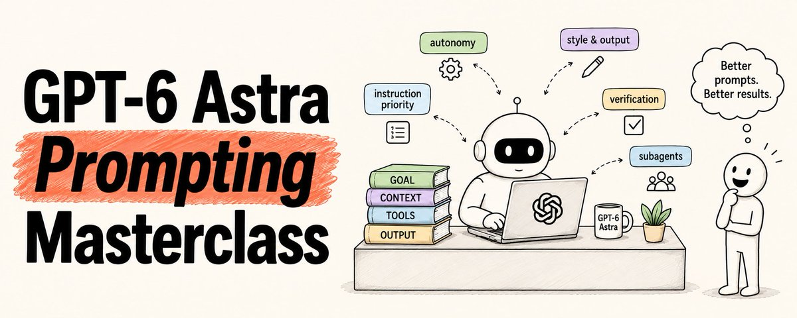
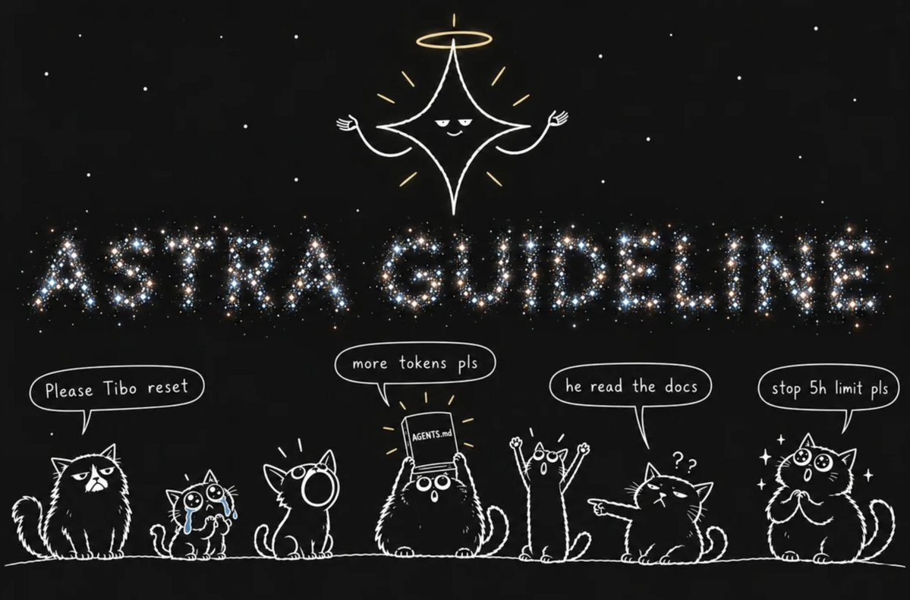
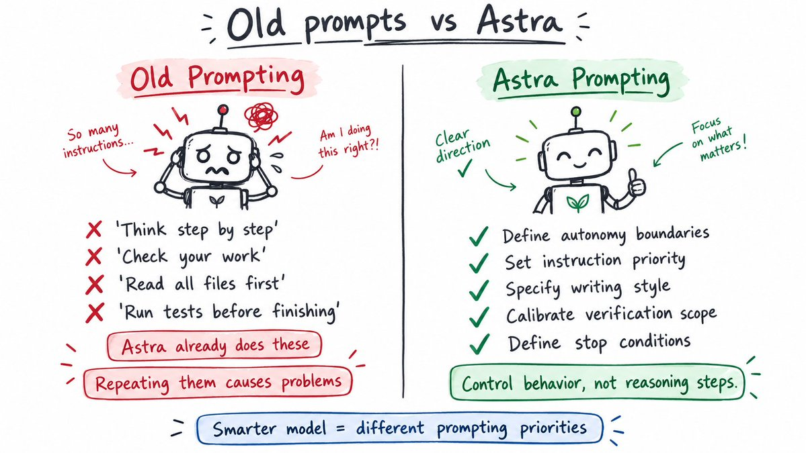
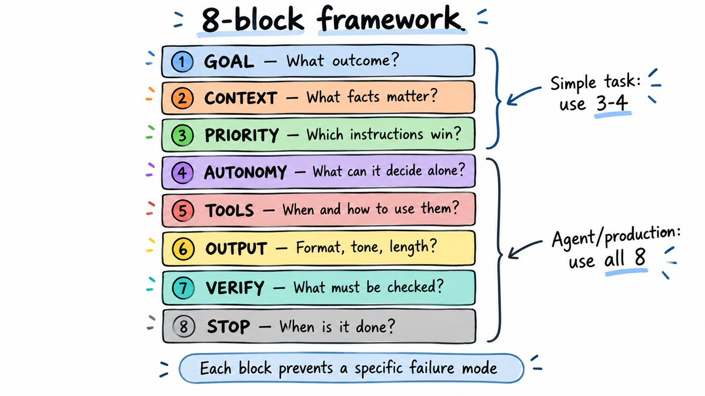
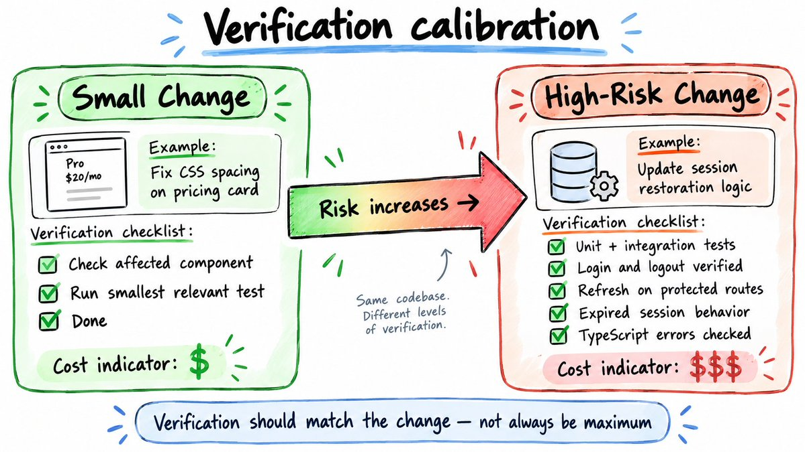

8 块框架 + 12 避坑 + 一键复制 Prompt · Rahul 深度解读
你 6 个月前精心写的 AGENTS.md,现在可能正让 Astra 越用越糟。Rahul 这篇 51.6 万浏览的长文给出 8 块框架、5 个工作流 prompt、12 个高频坑 + 1 个 audit prompt,全部支持一键复制 + EN/中文切换。

RAHUL · @SAIRAHUL1 · 2026/09/07 · GPT-6 ASTRA PROMPTING MASTERCLASS
作者是谁。Rahul (@sairahul1) · AI 工程师 + Builder, 长期在 X 写 AI engineering 一手观察。这篇 9 月 7 日发的长文是 6 周系列之外的一篇"专题深度"——专门讲升级到 GPT-6 Astra 之后,prompt 该怎么改。
这篇文章在讲什么。一句话: 不是写更长的 prompt, 是知道哪些行为该控制、哪些该放手。Astra 强大到会自动跑测试、自己读相关文件、自己做长任务——你以前为旧模型写的"提醒跑测试"类指令,现在反而让它过度测试。Rahul 给出 8 块框架(GOAL / CONTEXT / PRIORITY / AUTONOMY / TOOLS / OUTPUT / VERIFY / STOP)替代"先 prompt 工程再说"的旧思路, 配合 5 个工作流 prompt、12 个高频坑、1 个 audit prompt。
为什么这篇值得读。绝大多数 Astra 教程还在用 GPT-4 / 5 时代的"提示词套路"(think step by step、check your work、let me think)。Rahul 的角度是: 你之前为旧模型精心写的 AGENTS.md、skill files、链式 CoT 套路, 正是现在让 Astra 跑得更慢、token 费更多、context 撑爆的原因。这篇把"该删的旧 prompt"和"该加的新 prompt"一次讲透。
怎么读这篇文章。13 个 capability 章节, 每章顶部金句框 + 口语化中文翻译(原文英文保留)。原文 19 个 prompt 模板 + 4 张配图全部按 `.prompt-card` / `.code-block` 渲染, 带 EN/CN 切换 + 一键复制; cap 12 是 12 避坑表; cap 13 是 1 个 audit prompt + 12 项复选 checklist。最后是引用区。

原文配图 · Rahul (@sairahul1) · 2026/09/07 · 5 个必须显式 prompt 的行为:initiative / instruction priority / writing style / subagent delegation / testing。
这 5 个老 prompt 套路, 升级到 Astra 之后反过来:
1. Initiative(主动推进) —— 你以为它会继续, 它停下来问澄清问题。
2. Instruction priority(指令优先级) —— 跨文件的冲突指引让 Astra 直接卡住。
3. Writing style(写作风格) —— 默认重 markdown / 列表, 应用需要散文时翻车。
4. Subagent delegation(子 agent 委托) —— 不主动拆, 多 agent 架构走不起来。
5. Testing(测试) —— 改一行 CSS 跑全量测试, 过度校验拖慢速度。
整篇 8 块框架、19 个 prompt、12 个避坑都是围绕这 5 点展开。
Prompting Astra is not about writing longer prompts. It is about knowing which behaviors to control and which to leave alone.
— RAHUL · GPT-6 ASTRA PROMPTING MASTERCLASS

原文配图 · Rahul (@sairahul1) · 2026/09/07 · 老 prompt 套路让 Astra 越用越糟的 5 个具体反例。
旧模型需要你手把手。
你得推它跑测试、推它检查工作、推它读相关文件、推它在长任务里继续。
Astra 全部自己做了。
这意味着你当年为强制这些行为写的旧指令, 现在反过来跟模型对抗。
5 个行为必须用新 prompt 显式控制:
1. Initiative — it pauses when you expect it to continue 2. Instruction priority — conflicting skills can stall it 3. Writing style — defaults to heavy markdown and lists 4. Subagent delegation — delegates less than you might want 5. Testing — overtests small changes
1. Initiative(主动推进)—— 你以为它会继续, 它却停下来问 2. Instruction priority(指令优先级)—— 冲突的 skill 把它卡住 3. Writing style(写作风格)—— 默认重 markdown 和列表 4. Subagent delegation(子 agent 委托)—— 没你期望得那么多 5. Testing(测试)—— 对小改动过度测试
这就是整套位移。
Astra 变聪明了, 你的旧 prompt 没跟上。
下面我们修。

原文配图 · Rahul (@sairahul1) · 2026/09/07 · 8 块 prompt 框架总览:GOAL / CONTEXT / PRIORITY / AUTONOMY / TOOLS / OUTPUT / VERIFY / STOP。
简单任务, 用 3-4 块就行。
Agent、coding workflow、生产系统, 用全部 8 块。
GOAL → What outcome should be achieved? CONTEXT → What facts and background matter? PRIORITY → Which instruction sources have authority? AUTONOMY → What can Astra decide without asking? TOOLS → When to use tools, when to ask OUTPUT → Format, tone, structure, verbosity VERIFY → What must be checked before done STOP → When is the task actually complete?
GOAL → 要达成什么结果? CONTEXT → 哪些事实和背景重要? PRIORITY → 哪些指令源有权威? AUTONOMY → Astra 哪些决定不用问? TOOLS → 何时用工具, 何时问 OUTPUT → 格式、语气、结构、详略 VERIFY → 完成前要校验什么 STOP → 什么时候算真做完?
这不是要你整段抄进每条 prompt 的模板。
这是一份菜单。每块都对应一个具体的失败模式。
如果你的工作流没有那个失败模式, 删掉这块。
多数任务的简化版:
TASK What should be done. CONTEXT What matters. REQUIREMENTS What must be included. OUTPUT What it should look like.
TASK 要做什么。 CONTEXT 什么重要。 REQUIREMENTS 必须包含什么。 OUTPUT 应该长什么样。
做 agent、研究 workflow, 或任何涉及工具和长 autonomous 执行的活儿, 用完整 8 块。
Astra 比以往任何模型都更倾向于问澄清问题再行动。
这在错误假设会代价很大时, 是好事。
在你只想让它继续推时, 是烦人的。
修法: 把 autonomy 策略显式写出来。
给行动型 agent:
给高自主 workflow:
关键是一开始就决定, 不要留给模型的默认行为。
从旧模型升级的开发者, 这条几乎全踩过。
Astra 对 context 文件里的指令更敏感。
如果 AGENTS.md、skill files、任务 prompt 之间有冲突指引——Astra 可能停、可能提早阻断、可能跟一条你没料到的规则走。
你现在该做的审计:
把所有模型能访问到的指令文件全过一遍。
问: 这条任务还需要这条指令吗?
Instructions to cut immediately: ✗ "Read the full repo map before every edit" → Astra figures out what it needs to read ✗ "Run tests and check your work" → Astra does this automatically now ✗ "Don't commit broken code" → Already how it operates ✗ Any instruction you added to fix GPT-5 behavior → May now cause Astra to over-constrain itself
立即删的指令: ✗ "每次编辑前先读完整 repo map" → Astra 自己知道要读什么 ✗ "跑测试并检查工作" → Astra 现在自动做 ✗ "不要提交坏代码" → 它本来就怎么干 ✗ 任何为 gpt-5 行为打补丁的指令 → 现在可能让 Astra 过度自我约束
指令优先级 prompt:
Skill 文件专用——三条规则:
Astra 默认产出详细、格式化的回答。
列表、表格、标题、Markdown 满天飞。
如果你的应用需要散文、邮件、特定 house style 的文档, 或任何"原始 markdown 会显示成 **粗体** 而不是粗体"的界面, 你必须显式说明。
散文风格 prompt:
去套话 prompt(当它反复用同样短语时):
技术沟通:

原文配图 · Rahul (@sairahul1) · 2026/09/07 · 校验范围和改动幅度成比例——改一行 CSS 不该跑全量测试。
Astra 在"完成 coding 工作"前会做很彻底的测试。
对可逆的小 UI 修复, 这种彻底会变成:
这不是模型错了, 是它把对的本能用错了尺度。
修法: 把验证范围定义得和改动成比例。
小、可逆的改动:
高风险逻辑改动:
模型拿到"够用"的定义, 而不是默认"能多彻底就多彻底"。
Astra 能跨 subagent 拆活并行跑。
但如果你不说什么时候拆, 它不会像你多 agent workflow 期望得那么主动。
委托 prompt:
agent-to-agent 消息的额外细节:
(Astra 不加这条, agent 之间的消息会乱码。)
如果你习惯了 GPT-5.6 Sol 接到任务跑很久不停, Astra 会让你觉得"扭扭捏捏"。
它可能第一次实现完就回来, 但其实还有活儿没干。
这不是 bug, 是 Astra 在小心不超出你给的范围。
修法: 任务开始前定义"完成"是什么样。
如果你想 Astra 在首轮之后继续探索:
模糊: "继续到做完为止。"
具体: "当所有受影响路由返回 200 且没有 TypeScript 错误时停止。"
这是把上面所有行为打包的、生产可用的完整 system prompt。
Agent 和复杂 workflow 整段用。
简单任务只挑用得上的 section。
Astra 最常见使用场景的 copy-paste prompt。
这些不是 prompt 改动, 是迁到 Astra 必做的API 级改动。
# Model
model = "gpt-6-astra"
# Reasoning (start here if you used none/minimal before)
reasoning = {"effort": "low"} # then compare results
# Tool calling requires the Responses API
# (not Chat Completions)
client.responses.create(...)
# Remove these — no longer supported:
# temperature=0.7
# top_p=0.9
# top_logprobs=5
# Prompt caching — if migrating from GPT-5.5 or earlier
# Replace: prompt_cache_retention
# With: prompt_cache_options = {"ttl": "30m"}
# 模型
model = "gpt-6-astra"
# Reasoning(如果之前用 none / minimal, 从这里开始)
reasoning = {"effort": "low"} # 然后对比结果
# 工具调用需要 Responses API
# (不是 Chat Completions)
client.responses.create(...)
# 这些删除 —— 不再支持:
# temperature=0.7
# top_p=0.9
# top_logprobs=5
# Prompt caching —— 从 GPT-5.5 或更早迁过来
# 替换: prompt_cache_retention
# 改为: prompt_cache_options = {"ttl": "30m"}
一行命令迁移:
$openai-docs migrate this project to GPT-6 Astra
$openai-docs migrate this project to GPT-6 Astra
如果你用 Codex, OpenAI 官方发了一个 skill, 读他们的迁移指南并把相关改动应用到项目:
Skill repo: github.com/openai/skills
中量级 repo 测过, 开箱即用。
这些是让人最浪费时间的失败模式。
不说什么时候该假设、什么时候该问,astra 就默认问。
修法 先把策略写出来,再启动任务。
astra 不再需要被提醒跑测试或检查工作,这类指令现在反而会过度测试。
修法 把当年为 gpt-5 写的所有补丁指令都过一遍,只留当下还有意义的。
skill 越多,每个 skill 描述被压缩得越短,astra 看到的是残缺描述,反而选错。
修法 控制 skill 总数,描述保持一行可读完。
skill 描述应该说「何时用」,不是讲完整工作流——后者放进 skill 文档本身。
修法 描述一句话,正文用渐进式披露(progressive disclosure)。
如果你同时有 agents.md + skill 文件 + 任务 prompt,astra 必须知道哪个赢。
修法 在系统 prompt 里显式声明指令优先级,别让模型猜。
1,050,000 token context 能装下大量冲突、过期、无关内容。context 多不一定更好。
修法 context engineering 只塞当下用得上的部分。
astra 默认重度 markdown。如果你的应用要散文或特定语气,必须声明。
修法 在 style prompt 里写清楚文体,不要赌默认。
没有规则,astra 既不会主动拆,也不会协调。
修法 写明「什么可以并行、谁负责合」。
对长跑 agent,astra 必须知道「做完」是什么。否则要么早停,要么跑过头。
修法 在任务开始前写明完成判据。
「think with maximum intelligence」不会改 reasoning effort。
修法 reasoning effort 走 api 参数,不是 prompt。
更干净的 prompt 也可能产生更差的结果。
修法 在代表性测试用例上对比新旧版本,别凭直觉改。
网页、上传文件、工具结果里可能夹带「像指令」的文字。
修法 外部内容默认当数据,除非你显式指定它可信。
用这条 prompt 让 Astra 清理你自己项目的指令配置:
一条 prompt, 清理整个项目配置。
prompting checklist——跑任何 Astra prompt 之前, 逐条对照:
任何一条打不了勾——这就是你下次 prompt 失败的地方。
Each block exists because there is a realistic failure mode it prevents. If your workflow does not have that failure mode, remove the block.
— RAHUL · GPT-6 ASTRA · 8-BLOCK FRAMEWORK
19 个 prompt 全部支持 EN/CN 切换 + 一键复制。
建议用法: 第一遍对照 12 避坑表清自己项目的 AGENTS.md; 第二遍按 cap 03-08 选改对应的 prompt 块; 第三遍用 cap 13 的 audit prompt 让 Astra 自己再过一遍。
任何 prompt 跑之前, 先过 12 项 checklist——任何一条打不了勾, 就是失败的地方。
SOURCES & CREDITS
建议用法: 第一遍读中文翻译, 抓住 8 块框架的整体形状; 第二遍切到 EN 选改 cap 09 的完整 system prompt——生产用建议直接从 cap 09 起步, 按你项目的实际失败模式增删 section; 改完用 cap 13 的 audit prompt 让 Astra 自己再过一遍。